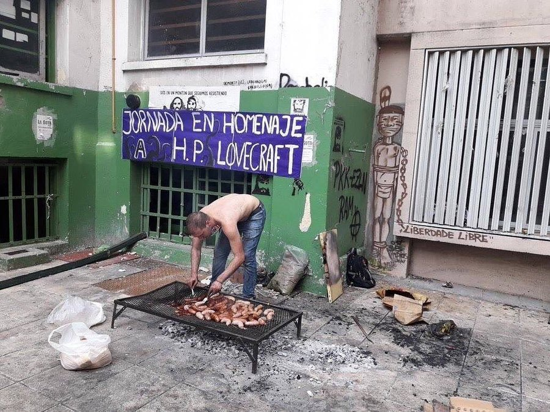

This is 'Asado'
Every animal that walks goes to the spit. Despite its rudimentary, almost savage character, asado is a ritual and a promise, and its mystical essence is evident because it gives the men who gather to prepare and eat it in company the illusion of a profound coincidence with the place in which they live.

Here we go, we need only those ingredients:
- 1 Kg de carne de vacuno (de tira, vacío, entraña, matambre, falda parrillera, entre otros cortes).
- 2 Morcillas
- 2 Chorizos
- 1 riñón
- Carbón o Leña
- 1 Kg chinchulín
- Sal parrillera, o que sea gruesa
- Chimi Churri
How to do it:
- Kidney fat should be removed, then open the kidney transversely. Leave them in a bowl for 45 min in vinegar, put the chorizos in water.
- In that moment, light the embers. An approximate calculation is that per kilo of meat, one kilo of charcoal.
- Add salt to the meat, to taste. On the grill, try to evenly spread the charcoal on the grill pan.
- Put the strip on the bone side, as well as the other cuts, always on the bone or on the fat side.
- Turn and turn the meat when its juice begins to come out.
- The black pudding is placed on the spit when the meat is turned for the first time.
- Until here, since, the cooking is to taste. You can accompany the roast with salads, potatoes or peppers.
Hope you enjoy!